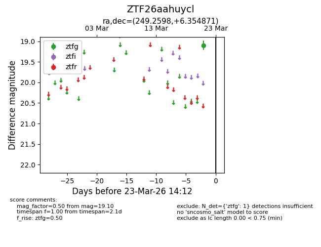
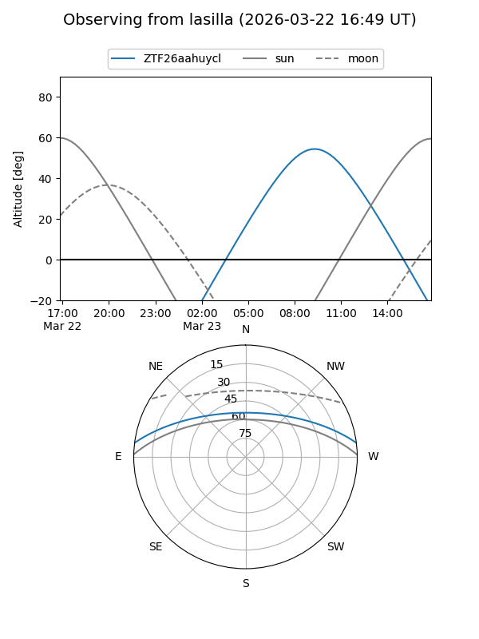
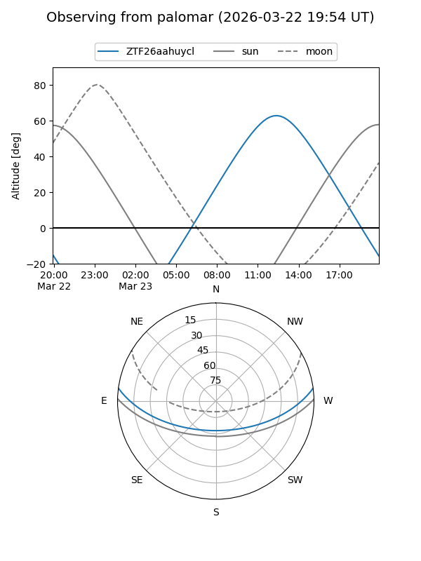

ZTF26aahuycl
Target ZTF26aahuycl at 2026-03-23 14:14
Aliases and brokers:
FINK: link
Lasair: link
ALeRCE: link
alt names
ZTF26aahuycl (ztf,fink_ztf)
Coordinates:
equatorial (ra, dec) = 249.2598,+6.35487
equatorial (HMS+DMS) = 16:37:02.34,+06:21:17.54
galactic (l, b) = (22.5088,+32.68044)
Flags:
Photometry:
last ztfg=19.10
1 ztfg detections
Lightcurve

Visibility


Additional plots